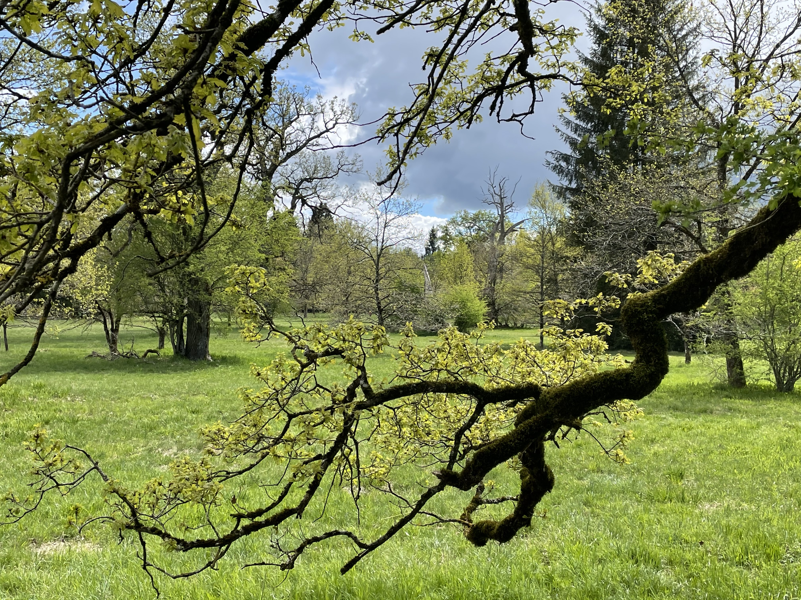
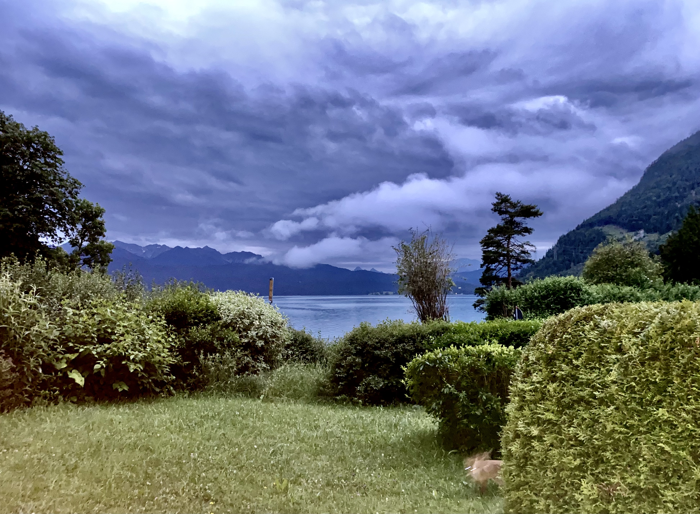
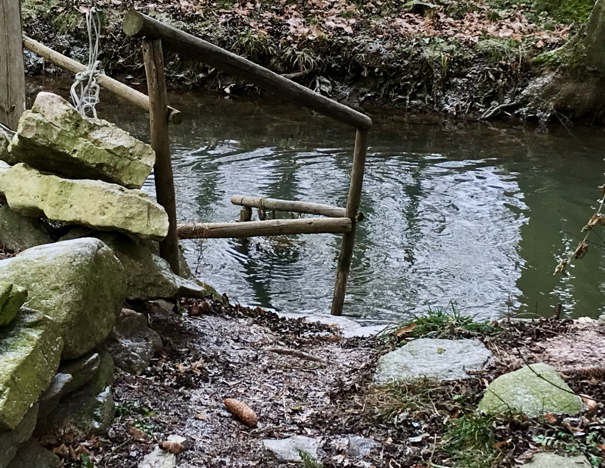
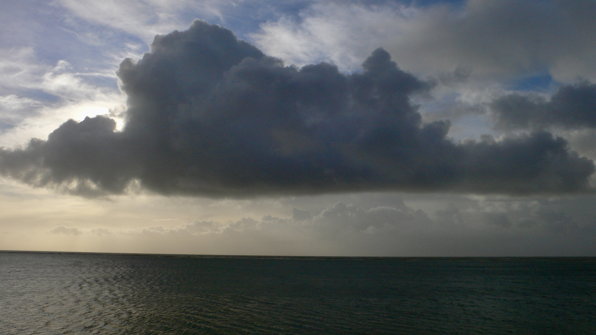
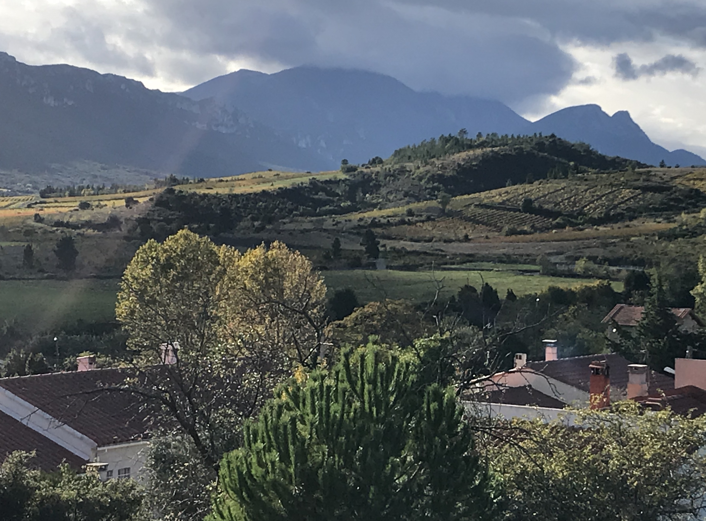
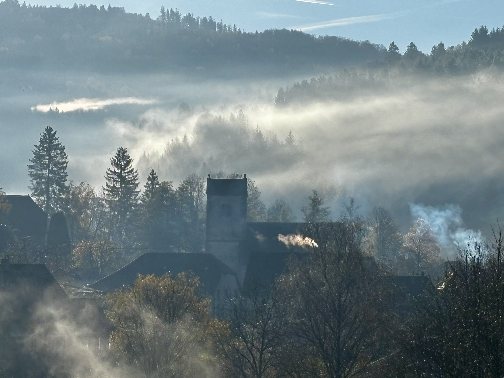
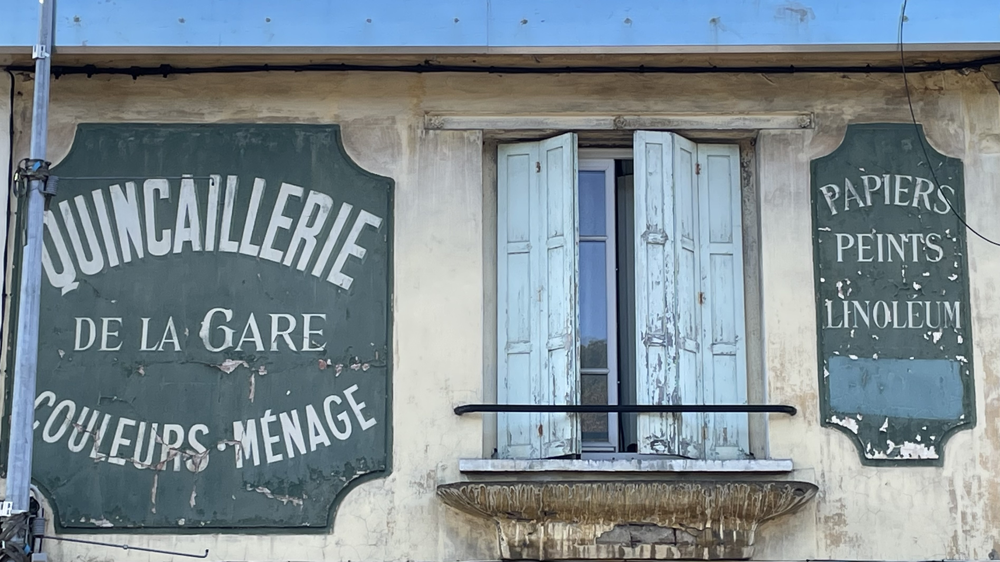
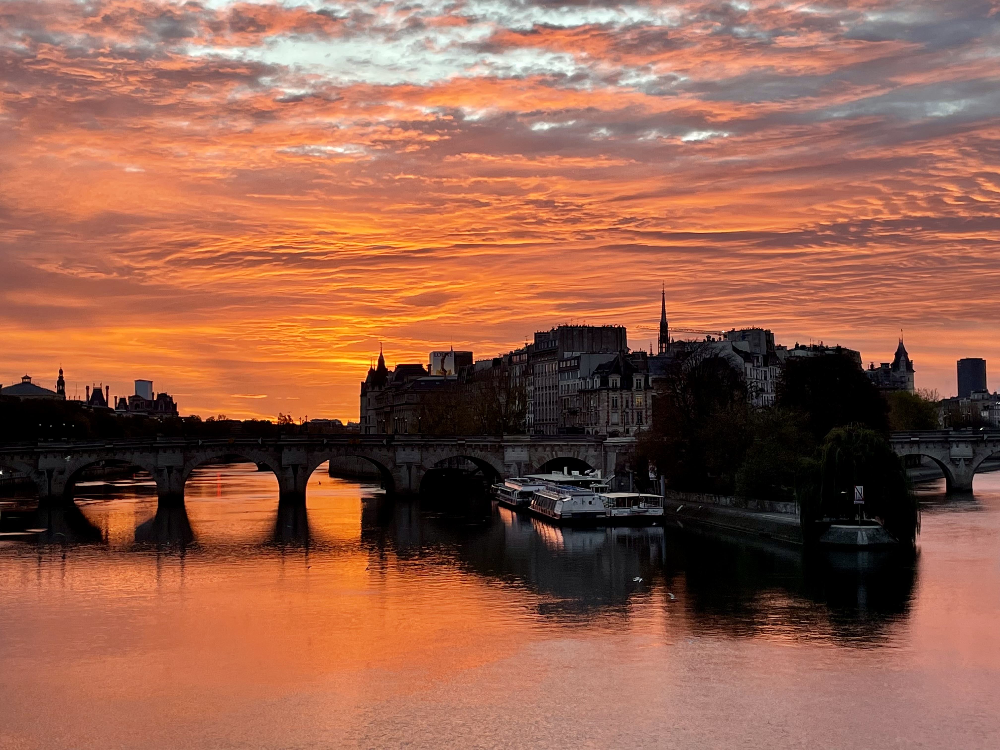
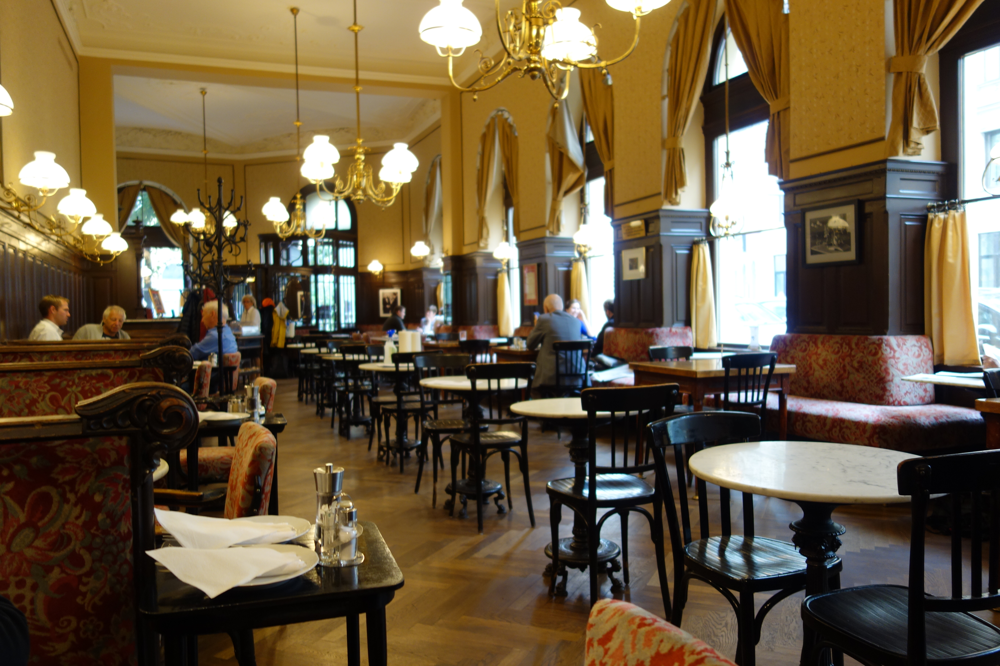
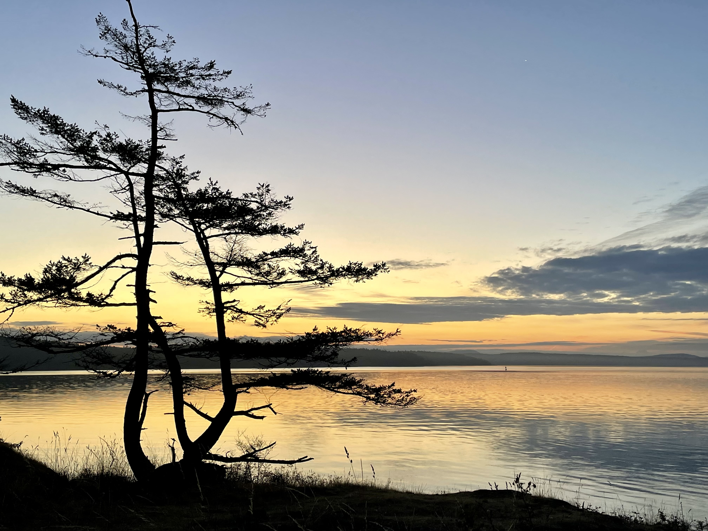

First documented in 1166 as a woodland clearing, Forstenried grew around the 15th-century, late-Gothic Heiligkreuz church, anchoring the settlement within the region's monastic network, where monastic estates and forestries collaborated on agricultural and weather tracking. Forstenried is tangentially related to monastic weather research through the assignment of Polling Abbey canon and astronomer Prosper Goldhofer to the local parish in 1765. Today, the Munich district Forstenried lies between two centers for weather and cloud research: the Institute of Atmospheric Physics at DLR Oberpfaffenhofen and the Meteorological Institute at LMU Munich close to the city center.
The FoCP has been researching clouds since its inception in 2026, complementing research of Bernd Kärcher (CV) by providing non-financial support through the organisation of scientific cooperation and the provision of technical infrastructure.
The following research studies were facilitated by the FoCP:










Contact
Forstenried Laboratory for Cloud PhysicsThis page has been viewed Loading… times